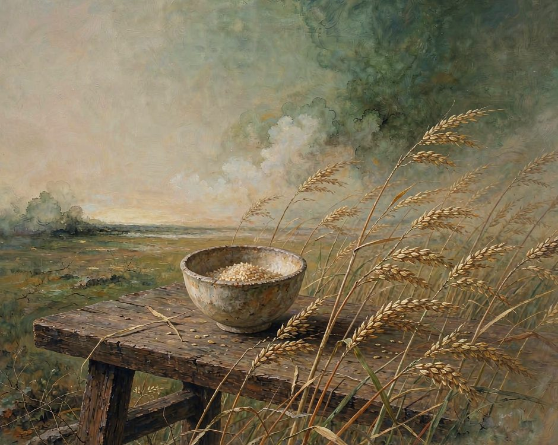
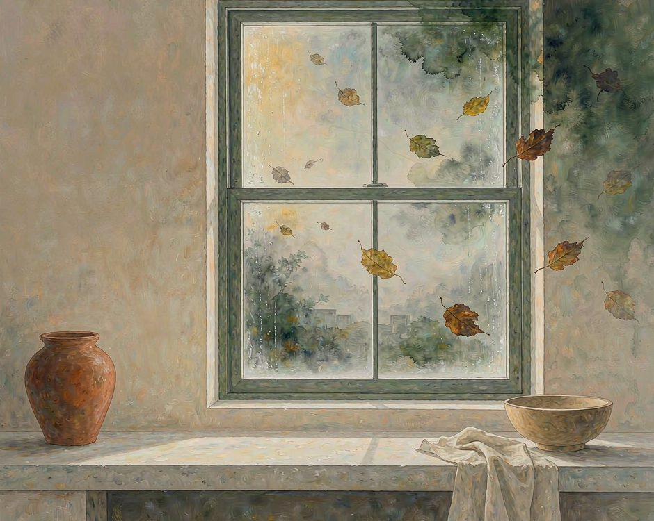
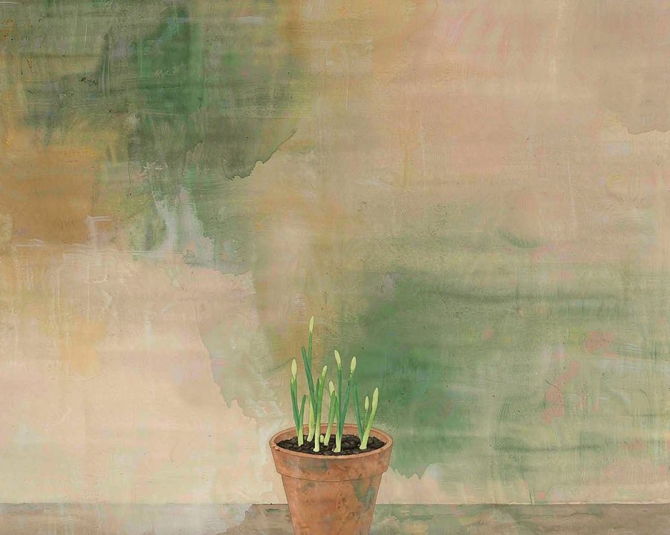

去有風的地方，把幸福餐桌種回土地裡。
雲南的一個小院，風從稻田那頭吹過來，桌上的碗裡盛著剛從院角摘下的菜，碗底還沾著一點沒洗乾淨的泥。

風這東西，城市裡最不缺說法，卻最缺實在。
天氣預報說風力三級，那三級吹在玻璃外面，吹不到人身上。
真正的風，是穿過稻田、繞過竹籬、掀起晾衣繩上那件舊衫的風，它帶著土的味道，也帶著時間的味道。一頓飯若坐在這樣的風裡，碗裡的飯就不再是孤立的一餐，而是這塊地、這個季節、這陣風一起給的。
城市裡，風是停了的。
冷氣把空氣做成一模一樣的涼，窗戶常年關著，三餐從手機下單，從外送盒裡拿出來。菜還是菜，飯還是飯，可這些從土裡來的東西，長在什麼土裡，被哪陣風碰過，大多成了沒人追問的事。
人吃得越來越方便，心裡卻空出一塊，說不清那塊空是什麼。

城市關上了窗，也關上了來路
一座城離土地多遠，住著的人就離踏實多遠。
那層被隔開的關係，總得有人去接住，倒不一定要辭職回鄉。麻煩的是，當窗戶關上、冷氣常開，連風都進不來，土地的氣息就跟著斷了。
超市的貨架把季節抹平，冬天能買到夏天的番茄，遠方運來的菜和本地田裡的菜躺在同一盞燈下，看不出分別。包裝袋上印著產地，那行小字很少有人真的讀。
餐桌還在，吃飯的人還在，只是飯桌和長出這頓飯的那塊地，被一層又一層的環節隔開了。
風，是土地在呼吸
去有風的地方，最先撞見的不是風景，是氣味。
雨要來之前，泥土有一股腥甜；稻子熟的時候，風裡帶著暖；剛翻過的地裡，蟲子和根鬚的氣味混在一起。這些味道，是土地在呼吸。
有風的地方，傳統市場裡很多菜還帶著泥，拎回家時指尖還能蹭到一點濕，那是風摸過的證據。
飯桌上的東西來得太容易，就容易把它當成理所當然，忘了它原本是土裡長出來的活物，不是貨架上標好價的商品。
飯桌離泥土近一點，人離自己也就近一點。
把餐桌種回去，從一件很小的事開始
種回去不用鬧得很大。
陽台角落擺兩盆蔥，想吃的時候掐一根，那根蔥就不再是標價牌上的重量，而是澆過水、看過它長高的東西。
週末去傳統市場，挑帶著泥的馬鈴薯，跟菜攤的老闆娘聊兩句她今早幾點去的地裡，哪塊田的茄子今天最嫩。順路帶一把當季的菜，比在螢幕上下單多聞見一點泥土的氣味。
這些事都小，小到不值得到動態上貼一張，可正是這些小動作，把餐桌和土地之間的線，一根一根接了起來。
線接上了，飯桌才重新有了根。

風不催著什麼快長。把餐桌種回土地，本來就是一種慢下來的練習。
開始在意一棵菜是哪個節氣長的，願意為一頓飯多走兩步路，時間就不再是被趕著跑的東西，而成了手心裡的溫度。
真實接觸不是什麼大道理，是手指碰過泥土之後，留的那一點涼。順天之時也不是老古話，是身體跟著季節走，反而比盯著螢幕更鬆快。
去有風的地方，不是逃開生活，是把飯桌重新安放回它本來的位置上，讓一頓飯，重新有了來路。
（小練習。這週末，去一趟帶著泥的傳統市場，挑一樣你叫得出名字、卻說不清它長在哪塊土裡的菜，帶回家，記住它。）
你呢。最近有沒有那種，明明吃著飯，卻突然想起這口飯是從哪塊地來的時刻。